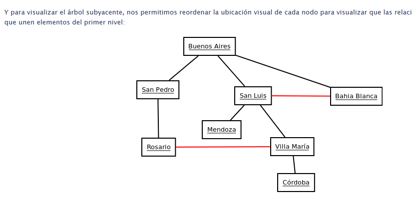

En las páginas previas de Árboles y Árboles Binarios ya estuvimos trabajando con algoritmos de búsqueda. Vimos profundidad primero y ancho primero para buscar elementos dentro de una estructura de árbol. En esta página vamos a entrar en más detalles sobre los algoritmos de búsqueda.
Un grafo es una estructura que tiene nodos interrelacionados. En los nodos generalmente se guarda información. Los árboles que ya vimos son en efecto un tipo particular de grafos en los cuales no se producen ciclos. Por ejemplo, un grafo que conecta distintas ciudades. En este caso cara arista representa una ruta entre ambas ciudades. La ruta la consideramos como "bidireccional", pero hay variantes de grafos en la que la relación es unidireccional (a esos grafos se los denomina dígrafo).
Los conceptos de profundidad primero y ancho primero también son aplicables a los grafos, pero necesitamos hacer cierta modificación para eliminar los ciclos. La manera de detectar ciclos es tener cierta memoria sobre los nodos que ya hemos visitado, para evitar recorrer el camino que ya recorrimos.
Modificamos el algoritmo que teníamos para árboles, para utiizar una semilla que nos permite saber si un nodo fue visitado o no

Un camino es una sucesión de nodos que se puede recorrer siguiendo las aristas de los grafos. Por ejemplo, si quiero ir de Buenos Aires a Villa María puedo ir de por 3 caminos:
Camino 1: Buenos Aires, San Pedro, Rosario, Villa María
)Camino 2: Buenos Aires, San Luis, Villa María
Camino 3: Buenos Aires, Bahia Blanca, San Luis, Villa María.
Si contamos la cantidad de pasos, el primer camino tiene 3 pasos, el segundo tiene 2 pasos y el tercero 3 pasos.
Sin embargo, el criterio de contar pasos no parece ser útil si quiero conocer el camino mínimo para viajar de Buenos Aires a Villa María. Para resolver ese problema nos falta agregar la cantidad de km que hay entre cada ciudad. Este valor, que es la distancia en km en nuestro caso concreto, lo vamos a generalizar con el nombre de peso para cualquier grafo y representa el costo de transicionar por una arista.
El algoritmo de Dijkstra es utilizado para calcular los costos mínimos de los caminos. Podemos encontrar una descripción detallada aqui.y un tutorial en forma de video aqui
La idea del algoritmo es ir recorriendo el grafo etiquetando cada nodo. La etiqueta de un nodo esta compuesto por la distancia acumulada hasta ese nodo y el nodo anterior.
Etiqueta(nodo) = (Peso_Acumulado, NodoAnterior)<(p>)
El algoritmo genera la etiqueta del primer elemento usando 0 como acumulado y None como nodo anterior. y luego procede recursivamente:
Elije el nodo etiquetado con menor valor y que no esté marcado como "procesado". Se generan las etiquetas de los nodos vecinos.
Si algun nodo vecino ya estaba etiquetado, se queda con la etiqueta que tenga menor valor acumulado y descarta la otra.
Se marca el nodo actual como "procesado"
El algoritmo termina cuando el nodo destino es marcado como permanente. El valor del acumulado en la etiqueta es el costo del camino, y siguiendo el valor anterior se puede obtener el camino.
En el siguiente grafo vamos a calcular el camino entre E y A (es distinto al ejemplo del tutorial).
Analicemos paso a paso con la misma convención que usamos en el ejemplo anterior:
En rojo marcamos los nodos ya procesados
En negrita se marca el menor acumulado que determina el nodo a procesar
En azul se marcan los cambios con respecto a la iteración anterior.